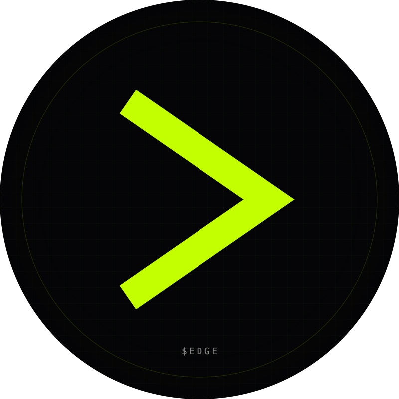

03.08 / Social Asset Pack · YouTube
YouTube. Long form.
PFP 800×800 (circle). Channel art 2560×1440 with a tightly designed 1546×423 center safe zone — everything outside that zone is decoration only.
Channel PFP
03.08.01 · 800×800 · circle

800 × 800 · SVG
800 × 800 · circle render
Channel Art
03.08.02 · 2560×1440 · safe zone 1546×423
2560 × 1440 · SVG · red dashed box = safe zone (visible on mobile/tablet/TV)
Description
03.08.03 · 1000 char
About the channel
Description
$EDGE is the terminal for prediction markets. Money (whales). Mouth (sentiment). Edge (the gap). Polymarket + Kalshi + onchain whale flow + X chatter, all in one screen. We publish: — Weekly market breakdowns — Whale-of-the-week deep dives — Divergence tutorials and playbooks — Founder devlogs on what we shipped this week Built by Rob + Tye. We trade these markets every day. The terminal is what we wished existed. Site: https://edge-two-psi.vercel.app/ Token: $EDGE on Solana (pump.fun launch) X: @edgeterminal Discord: discord.gg/edge Watch the action. Before you bet.
Channel Trailer Script
03.08.04 · 75 seconds
trailer · non-subscriber autoplay
$EDGE channel trailer
[0.0s — 2.0s] SMASH CUT. Terminal screen capture. Wallet 0xA3F2 dropping $640K on Trump-2028. ON-SCREEN: "$640K. 18 MINUTES AGO." [2.0s — 6.0s] CUT. Same market on X timeline. Sentiment scrolling negative. ON-SCREEN: "MEANWHILE, ON X: -41%" [6.0s — 9.0s] CUT to Divergence radar. Trump-2028 row highlighted. ON-SCREEN: "DIVERGENCE +0.72" [9.0s — 11.0s] VO: "Money says yes. Mouth says no. That's the edge." [11.0s — 16.0s] QUICK CUTS through the terminal: markets grid • whale tape • divergence radar • picker algo • sentiment heatmap. [16.0s — 20.0s] VO: "$EDGE is the terminal for prediction markets. Polymarket. Kalshi. Whale flow. Sentiment. One screen." [20.0s — 28.0s] PAN over the live divergence leaderboard. VO: "We score every market by the gap between where the money is and what the mouth is saying. When that gap is wide enough — and the whales are pointing the same direction — that's the call." [28.0s — 36.0s] CUT to picker algo track record page. VO: "Our public picker hit 64% last quarter. All calls live. No retcons. The track record is immutable — that's the point." [36.0s — 48.0s] CUT to founders intro card. VO: "Built by traders, for traders. Rob + Tye. We use this every day. The terminal is what we wished existed." [48.0s — 60.0s] CUT to channel content roadmap: — MONDAY MARKET BREAKDOWN — WEDNESDAY WHALE OF THE WEEK — FRIDAY DEVLOG — DAILY SHORTS (divergence drops) [60.0s — 68.0s] CUT to terminal hero with URL on screen. VO: "Open the terminal. Mute everything else." ON-SCREEN: "edge-two-psi.vercel.app" [68.0s — 75.0s] END CARD: lime chevron mark, "$EDGE — SUBSCRIBE". VO: "$EDGE. Watch the action. Before you bet."
Setup Notes
03.08.05
Brand account, handle
@edgeterminal. Upload pfp.svg exported to 800×800 PNG.Upload
banner.svg exported to 2560×1440 PNG (max 6MB). YouTube will crop on TV/mobile down to the 1546×423 safe zone — verify in preview before publishing.Set channel description from
bio.md. Add 5 links: Terminal, X, Discord, Telegram, Token.Record + publish the channel trailer. Set as the trailer for non-subscribers under Customization → Layout.
Set up sections on the channel home: 1. Channel trailer 2. Latest video 3. Shorts shelf 4. Playlist: "Divergence school" 5. Playlist: "Devlogs"
Thumbnails: black void, Anton headline in white, single lime accent word, JetBrains-mono data tag bottom-left. Never use a face on the thumbnail until the channel has 10+ videos.
Reserve handle variants:
@edge_terminal, @theedgeterminal, @edgemarkets. Park them with a redirect video pointing to @edgeterminal.